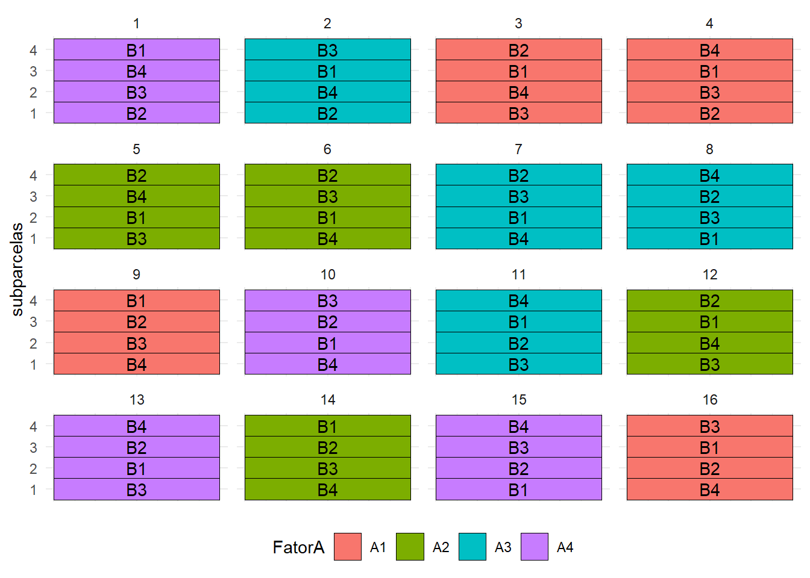
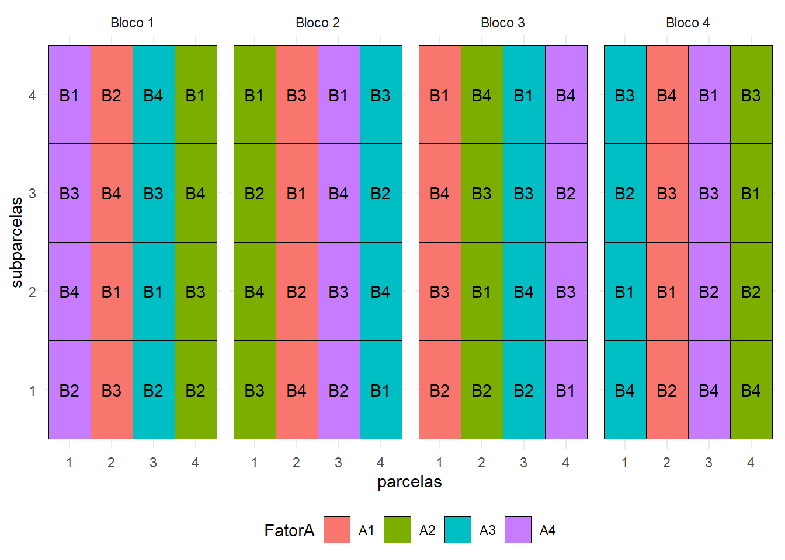
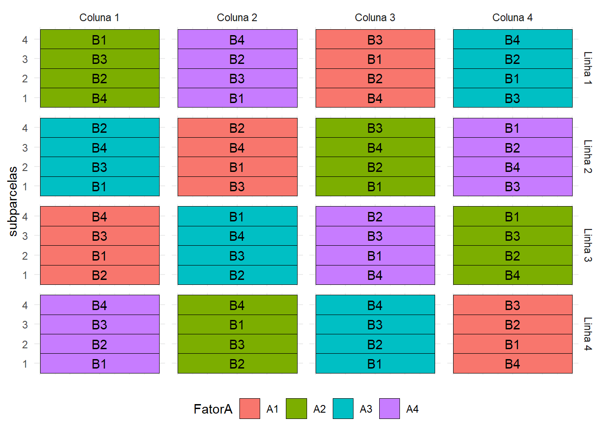
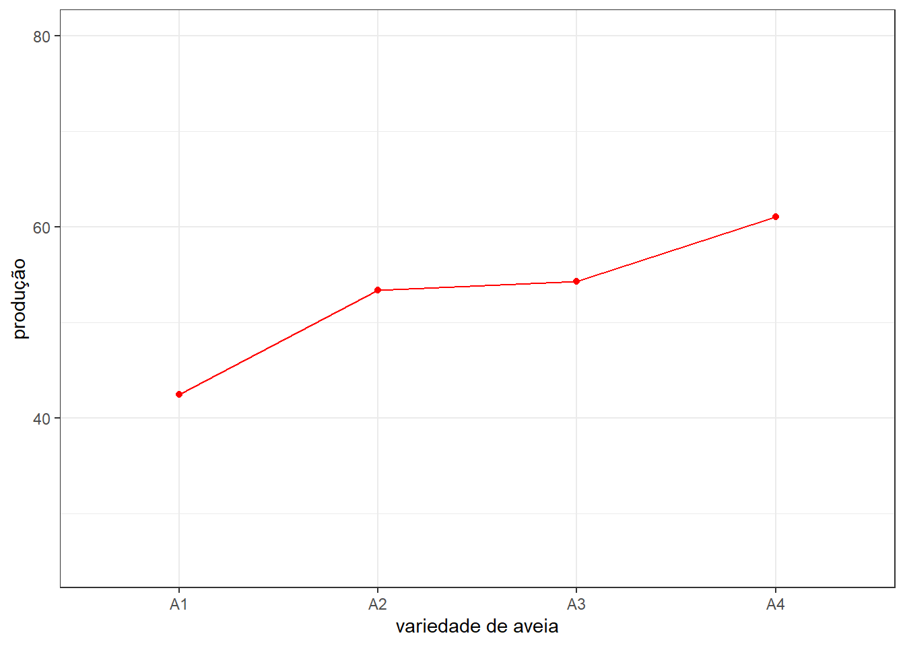
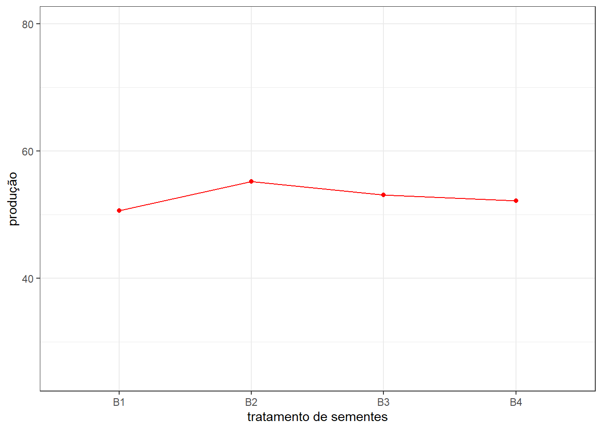
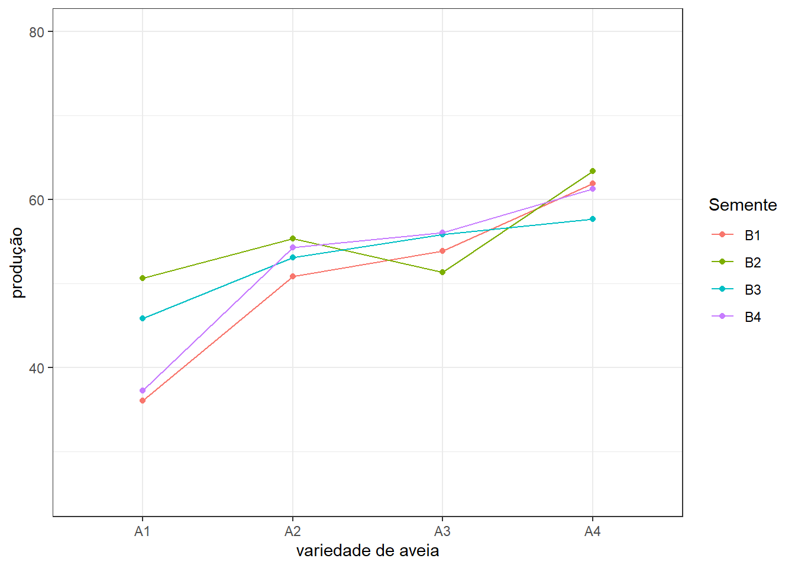
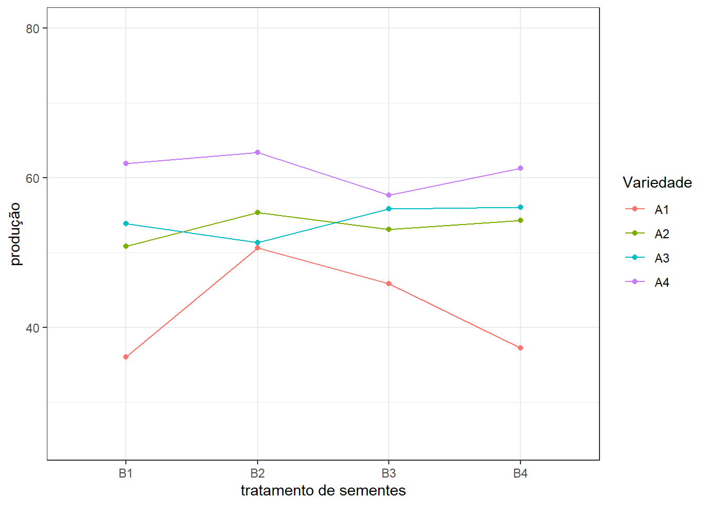

#' # Croqui
#'
#' Um possível croqui para um experimento com $r$ repetições e
#' esquema de tratamentos em parcelas subdivididas, sendo o fator A casualizado
#' às parcelas com $a$ níveis e
#' o fator B casualizado às subparcelas com $b$ níveis
#'
#' ## DIC
#'
library(agricolae)
a = 4
b = 4
r = 4
(FatorA = c(paste("A", 1:a, sep = "")))## [1] "A1" "A2" "A3" "A4"(FatorB = c(paste("B", 1:b, sep = "")))## [1] "B1" "B2" "B3" "B4"(Plano.dic <- design.split(FatorA,
FatorB,
r = r,
design = "crd",
serie = 0))## $parameters
## $parameters$design
## [1] "split"
##
## $parameters[[2]]
## [1] TRUE
##
## $parameters$trt1
## [1] "A1" "A2" "A3" "A4"
##
## $parameters$applied
## [1] "crd"
##
## $parameters$r
## [1] 4 4 4 4
##
## $parameters$serie
## [1] 0
##
## $parameters$seed
## [1] -1310337287
##
## $parameters$kinds
## [1] "Super-Duper"
##
##
## $book
## plots splots r FatorA FatorB
## 1 1 1 1 A4 B2
## 2 1 2 1 A4 B3
## 3 1 3 1 A4 B4
## 4 1 4 1 A4 B1
## 5 2 1 1 A3 B2
## 6 2 2 1 A3 B4
## 7 2 3 1 A3 B1
## 8 2 4 1 A3 B3
## 9 3 1 1 A1 B3
## 10 3 2 1 A1 B4
## 11 3 3 1 A1 B1
## 12 3 4 1 A1 B2
## 13 4 1 2 A1 B2
## 14 4 2 2 A1 B3
## 15 4 3 2 A1 B1
## 16 4 4 2 A1 B4
## 17 5 1 1 A2 B3
## 18 5 2 1 A2 B1
## 19 5 3 1 A2 B4
## 20 5 4 1 A2 B2
## 21 6 1 2 A2 B4
## 22 6 2 2 A2 B1
## 23 6 3 2 A2 B3
## 24 6 4 2 A2 B2
## 25 7 1 2 A3 B4
## 26 7 2 2 A3 B1
## 27 7 3 2 A3 B3
## 28 7 4 2 A3 B2
## 29 8 1 3 A3 B1
## 30 8 2 3 A3 B3
## 31 8 3 3 A3 B2
## 32 8 4 3 A3 B4
## 33 9 1 3 A1 B4
## 34 9 2 3 A1 B3
## 35 9 3 3 A1 B2
## 36 9 4 3 A1 B1
## 37 10 1 2 A4 B4
## 38 10 2 2 A4 B1
## 39 10 3 2 A4 B2
## 40 10 4 2 A4 B3
## 41 11 1 4 A3 B3
## 42 11 2 4 A3 B2
## 43 11 3 4 A3 B1
## 44 11 4 4 A3 B4
## 45 12 1 3 A2 B3
## 46 12 2 3 A2 B4
## 47 12 3 3 A2 B1
## 48 12 4 3 A2 B2
## 49 13 1 3 A4 B3
## 50 13 2 3 A4 B1
## 51 13 3 3 A4 B2
## 52 13 4 3 A4 B4
## 53 14 1 4 A2 B4
## 54 14 2 4 A2 B3
## 55 14 3 4 A2 B2
## 56 14 4 4 A2 B1
## 57 15 1 4 A4 B1
## 58 15 2 4 A4 B2
## 59 15 3 4 A4 B3
## 60 15 4 4 A4 B4
## 61 16 1 4 A1 B4
## 62 16 2 4 A1 B2
## 63 16 3 4 A1 B1
## 64 16 4 4 A1 B3#'
#' - Croqui
#'
library(ggplot2)## Warning: package 'ggplot2' was built under R version 4.3.3ggplot(Plano.dic$book,
aes(x = 1,
y = splots,
label = FatorB,
fill = FatorA)) +
geom_tile(color="black") +
geom_text() +
facet_wrap(~ plots,
ncol = 4,
nrow = 4) +
xlab("parcelas") +
ylab("subparcelas") +
theme_minimal() +
theme(axis.ticks.x = element_blank(),
axis.text.x = element_blank(),
axis.title.x = element_blank(),
legend.position = "bottom")
#'
#' ## DBC
#'
library(agricolae)
a = 4
b = 4
r = 4
(FatorA = c(paste("A", 1:a, sep = "")))## [1] "A1" "A2" "A3" "A4"(FatorB = c(paste("B", 1:b, sep = "")))## [1] "B1" "B2" "B3" "B4"(Plano.dbc <- design.split(FatorA,
FatorB,
r = r,
design = "rcbd",
serie = 0))## $parameters
## $parameters$design
## [1] "split"
##
## $parameters[[2]]
## [1] TRUE
##
## $parameters$trt1
## [1] "A1" "A2" "A3" "A4"
##
## $parameters$applied
## [1] "rcbd"
##
## $parameters$r
## [1] 4
##
## $parameters$serie
## [1] 0
##
## $parameters$seed
## [1] -456231239
##
## $parameters$kinds
## [1] "Super-Duper"
##
##
## $book
## plots splots block FatorA FatorB
## 1 1 1 1 A4 B2
## 2 1 2 1 A4 B4
## 3 1 3 1 A4 B3
## 4 1 4 1 A4 B1
## 5 2 1 1 A1 B3
## 6 2 2 1 A1 B1
## 7 2 3 1 A1 B4
## 8 2 4 1 A1 B2
## 9 3 1 1 A3 B2
## 10 3 2 1 A3 B1
## 11 3 3 1 A3 B3
## 12 3 4 1 A3 B4
## 13 4 1 1 A2 B2
## 14 4 2 1 A2 B3
## 15 4 3 1 A2 B4
## 16 4 4 1 A2 B1
## 17 5 1 2 A2 B3
## 18 5 2 2 A2 B4
## 19 5 3 2 A2 B2
## 20 5 4 2 A2 B1
## 21 6 1 2 A1 B4
## 22 6 2 2 A1 B2
## 23 6 3 2 A1 B1
## 24 6 4 2 A1 B3
## 25 7 1 2 A4 B2
## 26 7 2 2 A4 B3
## 27 7 3 2 A4 B4
## 28 7 4 2 A4 B1
## 29 8 1 2 A3 B1
## 30 8 2 2 A3 B4
## 31 8 3 2 A3 B2
## 32 8 4 2 A3 B3
## 33 9 1 3 A1 B2
## 34 9 2 3 A1 B3
## 35 9 3 3 A1 B4
## 36 9 4 3 A1 B1
## 37 10 1 3 A2 B2
## 38 10 2 3 A2 B1
## 39 10 3 3 A2 B3
## 40 10 4 3 A2 B4
## 41 11 1 3 A3 B2
## 42 11 2 3 A3 B4
## 43 11 3 3 A3 B3
## 44 11 4 3 A3 B1
## 45 12 1 3 A4 B1
## 46 12 2 3 A4 B3
## 47 12 3 3 A4 B2
## 48 12 4 3 A4 B4
## 49 13 1 4 A3 B4
## 50 13 2 4 A3 B1
## 51 13 3 4 A3 B2
## 52 13 4 4 A3 B3
## 53 14 1 4 A1 B2
## 54 14 2 4 A1 B1
## 55 14 3 4 A1 B3
## 56 14 4 4 A1 B4
## 57 15 1 4 A4 B4
## 58 15 2 4 A4 B2
## 59 15 3 4 A4 B3
## 60 15 4 4 A4 B1
## 61 16 1 4 A2 B4
## 62 16 2 4 A2 B2
## 63 16 3 4 A2 B1
## 64 16 4 4 A2 B3Plano.dbc$book## plots splots block FatorA FatorB
## 1 1 1 1 A4 B2
## 2 1 2 1 A4 B4
## 3 1 3 1 A4 B3
## 4 1 4 1 A4 B1
## 5 2 1 1 A1 B3
## 6 2 2 1 A1 B1
## 7 2 3 1 A1 B4
## 8 2 4 1 A1 B2
## 9 3 1 1 A3 B2
## 10 3 2 1 A3 B1
## 11 3 3 1 A3 B3
## 12 3 4 1 A3 B4
## 13 4 1 1 A2 B2
## 14 4 2 1 A2 B3
## 15 4 3 1 A2 B4
## 16 4 4 1 A2 B1
## 17 5 1 2 A2 B3
## 18 5 2 2 A2 B4
## 19 5 3 2 A2 B2
## 20 5 4 2 A2 B1
## 21 6 1 2 A1 B4
## 22 6 2 2 A1 B2
## 23 6 3 2 A1 B1
## 24 6 4 2 A1 B3
## 25 7 1 2 A4 B2
## 26 7 2 2 A4 B3
## 27 7 3 2 A4 B4
## 28 7 4 2 A4 B1
## 29 8 1 2 A3 B1
## 30 8 2 2 A3 B4
## 31 8 3 2 A3 B2
## 32 8 4 2 A3 B3
## 33 9 1 3 A1 B2
## 34 9 2 3 A1 B3
## 35 9 3 3 A1 B4
## 36 9 4 3 A1 B1
## 37 10 1 3 A2 B2
## 38 10 2 3 A2 B1
## 39 10 3 3 A2 B3
## 40 10 4 3 A2 B4
## 41 11 1 3 A3 B2
## 42 11 2 3 A3 B4
## 43 11 3 3 A3 B3
## 44 11 4 3 A3 B1
## 45 12 1 3 A4 B1
## 46 12 2 3 A4 B3
## 47 12 3 3 A4 B2
## 48 12 4 3 A4 B4
## 49 13 1 4 A3 B4
## 50 13 2 4 A3 B1
## 51 13 3 4 A3 B2
## 52 13 4 4 A3 B3
## 53 14 1 4 A1 B2
## 54 14 2 4 A1 B1
## 55 14 3 4 A1 B3
## 56 14 4 4 A1 B4
## 57 15 1 4 A4 B4
## 58 15 2 4 A4 B2
## 59 15 3 4 A4 B3
## 60 15 4 4 A4 B1
## 61 16 1 4 A2 B4
## 62 16 2 4 A2 B2
## 63 16 3 4 A2 B1
## 64 16 4 4 A2 B3Plano.dbc$book$plots <- as.factor(
rep(1:a, each = b, times = r))
#'
#' - Croqui
#'
Plano.dbc$book## plots splots block FatorA FatorB
## 1 1 1 1 A4 B2
## 2 1 2 1 A4 B4
## 3 1 3 1 A4 B3
## 4 1 4 1 A4 B1
## 5 2 1 1 A1 B3
## 6 2 2 1 A1 B1
## 7 2 3 1 A1 B4
## 8 2 4 1 A1 B2
## 9 3 1 1 A3 B2
## 10 3 2 1 A3 B1
## 11 3 3 1 A3 B3
## 12 3 4 1 A3 B4
## 13 4 1 1 A2 B2
## 14 4 2 1 A2 B3
## 15 4 3 1 A2 B4
## 16 4 4 1 A2 B1
## 17 1 1 2 A2 B3
## 18 1 2 2 A2 B4
## 19 1 3 2 A2 B2
## 20 1 4 2 A2 B1
## 21 2 1 2 A1 B4
## 22 2 2 2 A1 B2
## 23 2 3 2 A1 B1
## 24 2 4 2 A1 B3
## 25 3 1 2 A4 B2
## 26 3 2 2 A4 B3
## 27 3 3 2 A4 B4
## 28 3 4 2 A4 B1
## 29 4 1 2 A3 B1
## 30 4 2 2 A3 B4
## 31 4 3 2 A3 B2
## 32 4 4 2 A3 B3
## 33 1 1 3 A1 B2
## 34 1 2 3 A1 B3
## 35 1 3 3 A1 B4
## 36 1 4 3 A1 B1
## 37 2 1 3 A2 B2
## 38 2 2 3 A2 B1
## 39 2 3 3 A2 B3
## 40 2 4 3 A2 B4
## 41 3 1 3 A3 B2
## 42 3 2 3 A3 B4
## 43 3 3 3 A3 B3
## 44 3 4 3 A3 B1
## 45 4 1 3 A4 B1
## 46 4 2 3 A4 B3
## 47 4 3 3 A4 B2
## 48 4 4 3 A4 B4
## 49 1 1 4 A3 B4
## 50 1 2 4 A3 B1
## 51 1 3 4 A3 B2
## 52 1 4 4 A3 B3
## 53 2 1 4 A1 B2
## 54 2 2 4 A1 B1
## 55 2 3 4 A1 B3
## 56 2 4 4 A1 B4
## 57 3 1 4 A4 B4
## 58 3 2 4 A4 B2
## 59 3 3 4 A4 B3
## 60 3 4 4 A4 B1
## 61 4 1 4 A2 B4
## 62 4 2 4 A2 B2
## 63 4 3 4 A2 B1
## 64 4 4 4 A2 B3Plano.dbc$book$block <- paste("Bloco",
Plano.dbc$book$block)
library(ggplot2)
ggplot(Plano.dbc$book,
aes(x = plots,
y = splots,
label = FatorB,
fill = FatorA)) +
geom_tile(color="black") +
geom_text() +
facet_grid(~ block) +
theme_minimal() +
xlab("parcelas") +
ylab("subparcelas") +
theme(legend.position = "bottom")
#'
#' ## DQL (lembrando que r = a*b)
#'
library(agricolae)
a = 4
b = 4
(FatorA = c(paste("A", 1:a, sep = "")))## [1] "A1" "A2" "A3" "A4"(FatorB = c(paste("B", 1:b, sep = "")))## [1] "B1" "B2" "B3" "B4"(Plano.dql <- design.split(FatorA,
FatorB,
design = "lsd",
serie = 0))## $parameters
## $parameters$design
## [1] "split"
##
## $parameters[[2]]
## [1] TRUE
##
## $parameters$trt1
## [1] "A1" "A2" "A3" "A4"
##
## $parameters$applied
## [1] "lsd"
##
## $parameters$r
## [1] 4
##
## $parameters$serie
## [1] 0
##
## $parameters$seed
## [1] -289697675
##
## $parameters$kinds
## [1] "Super-Duper"
##
##
## $book
## plots splots row col FatorA FatorB
## 1 11 1 1 1 A2 B4
## 2 11 2 1 1 A2 B2
## 3 11 3 1 1 A2 B3
## 4 11 4 1 1 A2 B1
## 5 12 1 1 2 A4 B1
## 6 12 2 1 2 A4 B3
## 7 12 3 1 2 A4 B2
## 8 12 4 1 2 A4 B4
## 9 13 1 1 3 A1 B4
## 10 13 2 1 3 A1 B2
## 11 13 3 1 3 A1 B1
## 12 13 4 1 3 A1 B3
## 13 14 1 1 4 A3 B3
## 14 14 2 1 4 A3 B1
## 15 14 3 1 4 A3 B2
## 16 14 4 1 4 A3 B4
## 17 21 1 2 1 A3 B1
## 18 21 2 2 1 A3 B3
## 19 21 3 2 1 A3 B4
## 20 21 4 2 1 A3 B2
## 21 22 1 2 2 A1 B3
## 22 22 2 2 2 A1 B1
## 23 22 3 2 2 A1 B4
## 24 22 4 2 2 A1 B2
## 25 23 1 2 3 A2 B1
## 26 23 2 2 3 A2 B2
## 27 23 3 2 3 A2 B4
## 28 23 4 2 3 A2 B3
## 29 24 1 2 4 A4 B3
## 30 24 2 2 4 A4 B4
## 31 24 3 2 4 A4 B2
## 32 24 4 2 4 A4 B1
## 33 31 1 3 1 A1 B2
## 34 31 2 3 1 A1 B1
## 35 31 3 3 1 A1 B3
## 36 31 4 3 1 A1 B4
## 37 32 1 3 2 A3 B2
## 38 32 2 3 2 A3 B3
## 39 32 3 3 2 A3 B4
## 40 32 4 3 2 A3 B1
## 41 33 1 3 3 A4 B4
## 42 33 2 3 3 A4 B1
## 43 33 3 3 3 A4 B3
## 44 33 4 3 3 A4 B2
## 45 34 1 3 4 A2 B4
## 46 34 2 3 4 A2 B2
## 47 34 3 3 4 A2 B3
## 48 34 4 3 4 A2 B1
## 49 41 1 4 1 A4 B1
## 50 41 2 4 1 A4 B2
## 51 41 3 4 1 A4 B3
## 52 41 4 4 1 A4 B4
## 53 42 1 4 2 A2 B2
## 54 42 2 4 2 A2 B3
## 55 42 3 4 2 A2 B1
## 56 42 4 4 2 A2 B4
## 57 43 1 4 3 A3 B1
## 58 43 2 4 3 A3 B2
## 59 43 3 4 3 A3 B3
## 60 43 4 4 3 A3 B4
## 61 44 1 4 4 A1 B4
## 62 44 2 4 4 A1 B1
## 63 44 3 4 4 A1 B2
## 64 44 4 4 4 A1 B3#'
#' - Croqui
#'
Plano.dql$book## plots splots row col FatorA FatorB
## 1 11 1 1 1 A2 B4
## 2 11 2 1 1 A2 B2
## 3 11 3 1 1 A2 B3
## 4 11 4 1 1 A2 B1
## 5 12 1 1 2 A4 B1
## 6 12 2 1 2 A4 B3
## 7 12 3 1 2 A4 B2
## 8 12 4 1 2 A4 B4
## 9 13 1 1 3 A1 B4
## 10 13 2 1 3 A1 B2
## 11 13 3 1 3 A1 B1
## 12 13 4 1 3 A1 B3
## 13 14 1 1 4 A3 B3
## 14 14 2 1 4 A3 B1
## 15 14 3 1 4 A3 B2
## 16 14 4 1 4 A3 B4
## 17 21 1 2 1 A3 B1
## 18 21 2 2 1 A3 B3
## 19 21 3 2 1 A3 B4
## 20 21 4 2 1 A3 B2
## 21 22 1 2 2 A1 B3
## 22 22 2 2 2 A1 B1
## 23 22 3 2 2 A1 B4
## 24 22 4 2 2 A1 B2
## 25 23 1 2 3 A2 B1
## 26 23 2 2 3 A2 B2
## 27 23 3 2 3 A2 B4
## 28 23 4 2 3 A2 B3
## 29 24 1 2 4 A4 B3
## 30 24 2 2 4 A4 B4
## 31 24 3 2 4 A4 B2
## 32 24 4 2 4 A4 B1
## 33 31 1 3 1 A1 B2
## 34 31 2 3 1 A1 B1
## 35 31 3 3 1 A1 B3
## 36 31 4 3 1 A1 B4
## 37 32 1 3 2 A3 B2
## 38 32 2 3 2 A3 B3
## 39 32 3 3 2 A3 B4
## 40 32 4 3 2 A3 B1
## 41 33 1 3 3 A4 B4
## 42 33 2 3 3 A4 B1
## 43 33 3 3 3 A4 B3
## 44 33 4 3 3 A4 B2
## 45 34 1 3 4 A2 B4
## 46 34 2 3 4 A2 B2
## 47 34 3 3 4 A2 B3
## 48 34 4 3 4 A2 B1
## 49 41 1 4 1 A4 B1
## 50 41 2 4 1 A4 B2
## 51 41 3 4 1 A4 B3
## 52 41 4 4 1 A4 B4
## 53 42 1 4 2 A2 B2
## 54 42 2 4 2 A2 B3
## 55 42 3 4 2 A2 B1
## 56 42 4 4 2 A2 B4
## 57 43 1 4 3 A3 B1
## 58 43 2 4 3 A3 B2
## 59 43 3 4 3 A3 B3
## 60 43 4 4 3 A3 B4
## 61 44 1 4 4 A1 B4
## 62 44 2 4 4 A1 B1
## 63 44 3 4 4 A1 B2
## 64 44 4 4 4 A1 B3Plano.dql$book$row <- paste("Linha",
Plano.dql$book$row)
Plano.dql$book$col <- paste("Coluna",
Plano.dql$book$col)
library(ggplot2)
ggplot(Plano.dql$book,
aes(x = 1,
y = splots,
label = FatorB,
fill = FatorA)) +
geom_tile(color="black") +
geom_text() +
facet_grid(row ~ col) +
theme_minimal() +
ylab("subparcelas") +
theme(axis.ticks.x = element_blank(),
axis.text.x = element_blank(),
axis.title.x = element_blank(),
legend.position = "bottom")
#' #Análise dos dados (exemplo)
#' Banzatto e Kronka (1992), apresentaram o ensaio citado por
#' Steel e Torrie (1980), no qual são comparadas 4 variedades
#' de aveia (A1 - Vicland 1 infectada com o fungo *Helminthosporium victoriae*,
#' A2 - Vicland 2 não infectada, A3 - Clinton
#' resistente a *H. victoriae* e A4 - Branch resistente a *H. victoriae*) e
#' 4 tratamentos de sementes (B1 - Testemunha, B2 - Ceresan M, B3 -
#' Panogen e B4 - Agros) quanto aos efeitos sobre a produção.
#' As variedades foram distribuídas aleatoriamente nas parcelas
#' de cada um dos quatro blocos do ensaio. Os tratamentos de sementes
#' foram aleatoriamente distribuídos nas quatro subparcelas de cada parcela.
#'
#' ## Entrada dos dados
#'
rm(list = ls())
dados <- read.csv2("subdiv.csv")
#'
#' ## Tabelas e Gráficos
#'
with(dados,
tapply(prod, Variedade, mean))## A1 A2 A3 A4
## 42.45625 53.40625 54.30625 61.06875ggplot(dados, aes(x = Variedade,
y = prod,
group = 1)) +
geom_point(stat = 'summary',
fun = mean,
color = "red")+
geom_line(stat = 'summary',
fun = mean,
color = "red")+
xlab("variedade de aveia") +
ylab("produção") +
theme_bw() +
ylim(25,80)
with(dados,
tapply(prod, Semente, mean))## B1 B2 B3 B4
## 50.6875 55.2000 53.1250 52.2250ggplot(dados, aes(x = Semente,
y = prod,
group = 1)) +
geom_point(stat = 'summary',
fun = mean,
color = "red")+
geom_line(stat = 'summary',
fun = mean,
color = "red")+
xlab("tratamento de sementes") +
ylab("produção") +
theme_bw() +
ylim(25,80)
with(dados,
tapply(prod, list(Variedade, Semente), mean))## B1 B2 B3 B4
## A1 36.050 50.625 45.850 37.30
## A2 50.850 55.375 53.100 54.30
## A3 53.925 51.375 55.875 56.05
## A4 61.925 63.425 57.675 61.25ggplot(dados, aes(x = Variedade,
y = prod,
group = Semente,
color = Semente)) +
geom_point(stat = 'summary',
fun = mean)+
geom_line(stat = 'summary',
fun = mean)+
xlab("variedade de aveia") +
ylab("produção") +
theme_bw() +
ylim(25,80)
ggplot(dados, aes(x = Semente,
y = prod,
group = Variedade,
color = Variedade)) +
geom_point(stat = 'summary',
fun = mean)+
geom_line(stat = 'summary',
fun = mean)+
xlab("tratamento de sementes") +
ylab("produção") +
theme_bw() +
ylim(25,80)
#'
#' ## Ajuste do modelo
#'
modelo <- aov(prod ~ Bloco +
Variedade*Semente +
Error(Bloco:Variedade/Semente),
data = dados)## Warning in aov(prod ~ Bloco + Variedade * Semente +
## Error(Bloco:Variedade/Semente), : modelo Error() é singularsummary(modelo)##
## Error: Bloco:Variedade
## Df Sum Sq Mean Sq F value Pr(>F)
## Bloco 3 2842.9 947.6 13.79 0.00103 **
## Variedade 3 2848.0 949.3 13.82 0.00102 **
## Residuals 9 618.3 68.7
## ---
## Signif. codes: 0 '***' 0.001 '**' 0.01 '*' 0.05 '.' 0.1 ' ' 1
##
## Error: Bloco:Variedade:Semente
## Df Sum Sq Mean Sq F value Pr(>F)
## Semente 3 170.5 56.85 2.799 0.05386 .
## Variedade:Semente 9 586.5 65.16 3.208 0.00595 **
## Residuals 36 731.2 20.31
## ---
## Signif. codes: 0 '***' 0.001 '**' 0.01 '*' 0.05 '.' 0.1 ' ' 1library(ExpDes.pt)##
## Attaching package: 'ExpDes.pt'## The following objects are masked from 'package:agricolae':
##
## lastC, order.group, tapply.statwith(dados,
psub2.dbc(Variedade,
Semente,
Bloco,
prod,
quali = c(TRUE, TRUE),
fac.names = c("Variedade", "Semente")))## ------------------------------------------------------------------------
## Legenda:
## FATOR 1 (parcela): Variedade
## FATOR 2 (subparcela): Semente
## ------------------------------------------------------------------------
##
## ------------------------------------------------------------------------
## Quadro da analise de variancia
## ------------------------------------------------------------------------
## GL SQ QM Fc Pr(>Fc)
## Variedade 3 2848.0 949.34 13.8188 0.001022 **
## Bloco 3 2842.9 947.62 13.7938 0.001029 **
## Erro a 9 618.3 68.70
## Semente 3 170.5 56.85 2.7987 0.053859 .
## Variedade*Semente 9 586.5 65.16 3.2082 0.005945 **
## Erro b 36 731.2 20.31
## Total 63 7797.4
## ---
## Signif. codes: 0 '***' 0.001 '**' 0.01 '*' 0.05 '.' 0.1 ' ' 1
## ------------------------------------------------------------------------
## CV 1 = 15.69515 %
## CV 2 = 8.534077 %
##
##
##
## Interacao significativa: desdobrando a interacao
## ------------------------------------------------------------------------
##
## Desdobrando Variedade dentro de cada nivel de Semente
## ------------------------------------------------------------------------
## GL SQ QM Fc valor.p
## Variedade : Semente B1 3.00000 1404.1825 468.06083 14.442654 9e-06
## Variedade : Semente B2 3.00000 412.9700 137.65667 4.247584 0.014042
## Variedade : Semente B3 3.00000 324.7650 108.25500 3.340355 0.034095
## Variedade : Semente B4 3.00000 1292.5700 430.85667 13.294668 1.7e-05
## Erro combinado 26.77883 867.8545 32.40823
## ------------------------------------------------------------------------
##
##
## Variedade dentro de Semente B1
## ------------------------------------------------------------------------
## Teste de Tukey
## ------------------------------------------------------------------------
## Grupos Tratamentos Medias
## a A4 61.925
## ab A3 53.925
## b A2 50.85
## c A1 36.05
## ------------------------------------------------------------------------
##
## Variedade dentro de Semente B2
## ------------------------------------------------------------------------
## Teste de Tukey
## ------------------------------------------------------------------------
## Grupos Tratamentos Medias
## a A4 63.425
## ab A2 55.375
## b A3 51.375
## b A1 50.625
## ------------------------------------------------------------------------
##
## Variedade dentro de Semente B3
## ------------------------------------------------------------------------
## Teste de Tukey
## ------------------------------------------------------------------------
## Grupos Tratamentos Medias
## a A4 57.675
## ab A3 55.875
## ab A2 53.1
## b A1 45.85
## ------------------------------------------------------------------------
##
## Variedade dentro de Semente B4
## ------------------------------------------------------------------------
## Teste de Tukey
## ------------------------------------------------------------------------
## Grupos Tratamentos Medias
## a A4 61.25
## a A3 56.05
## a A2 54.3
## b A1 37.3
## ------------------------------------------------------------------------
##
##
## Desdobrando Semente dentro de cada nivel de Variedade
## ------------------------------------------------------------------------
## GL SQ QM Fc valor.p
## Semente : Variedade A1 3 583.49188 194.49729 9.575873 8.7e-05
## Semente : Variedade A2 3 45.21187 15.07062 0.741987 0.534047
## Semente : Variedade A3 3 56.95687 18.98562 0.934738 0.433943
## Semente : Variedade A4 3 71.34188 23.78063 1.170814 0.33435
## Erro b 36 731.20250 20.31118
## ------------------------------------------------------------------------
##
##
## Semente dentro de Variedade A1
## ------------------------------------------------------------------------
## Teste de Tukey
## ------------------------------------------------------------------------
## Grupos Tratamentos Medias
## a B2 50.625
## ab B3 45.85
## bc B4 37.3
## c B1 36.05
## ------------------------------------------------------------------------
## ------------------------------------------------------------------------
##
##
## Semente dentro de Variedade A2
## ------------------------------------------------------------------------
## De acordo com o teste F, as medias desse fator sao estatisticamente iguais.
## ------------------------------------------------------------------------
## Niveis Medias
## 1 B1 50.850
## 2 B2 55.375
## 3 B3 53.100
## 4 B4 54.300
## ------------------------------------------------------------------------
##
## Semente dentro de Variedade A3
## ------------------------------------------------------------------------
## De acordo com o teste F, as medias desse fator sao estatisticamente iguais.
## ------------------------------------------------------------------------
## Niveis Medias
## 1 B1 53.925
## 2 B2 51.375
## 3 B3 55.875
## 4 B4 56.050
## ------------------------------------------------------------------------
##
## Semente dentro de Variedade A4
## ------------------------------------------------------------------------
## De acordo com o teste F, as medias desse fator sao estatisticamente iguais.
## ------------------------------------------------------------------------
## Niveis Medias
## 1 B1 61.925
## 2 B2 63.425
## 3 B3 57.675
## 4 B4 61.250
## ------------------------------------------------------------------------